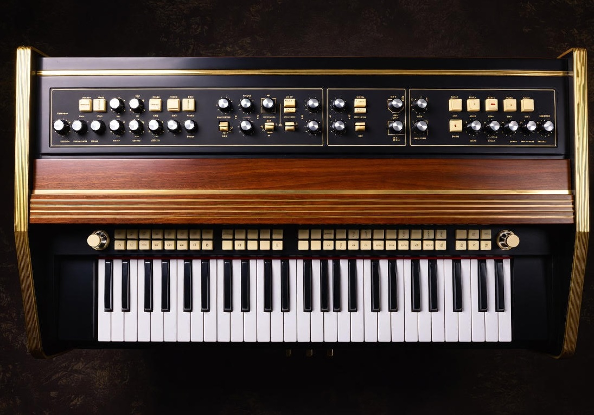
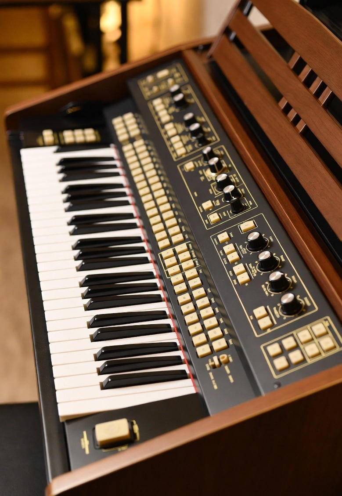

Org (Organ)
Tanım ve Genel Özellikler
Org, tuşlu ve nefesli çalgıların en karmaşık ve etkileyici olanıdır. Ses, hava akımıyla borulardan veya elektronik devrelerle üretilir. Tarih boyunca kilise müziğinden caz ve rock’a kadar çok geniş bir yelpazede kullanılmıştır.
Günümüzde en çok kullanılan iki ana türü bulunmaktadır:

Kontroller ve Çalma Tekniği
Org genellikle birden fazla manuel (klavye) ve bir pedal klavyesine sahiptir. Ses rengini değiştiren “durak” (stop) kolları ile binlerce farklı tını elde edilebilir.

Müzik Türlerindeki Rolleri
- Klasik & Kilise Müziği: Boru orglar Barok dönemden beri ana enstrümandır (Bach, Buxtehude).
- Caz, Funk, Rock: Hammond B-3, Leslie hoparlör ile efsaneleşmiştir (Jimmy Smith, Jon Lord, Keith Emerson).
- Pop & Klavye Müziği: Yamaha, Roland, Korg gibi elektronik orglar 80’ler ve 90’lar popunda çok kullanılmıştır.